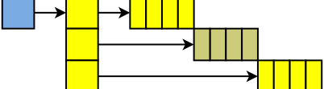
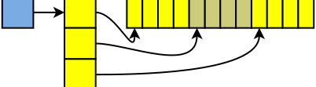
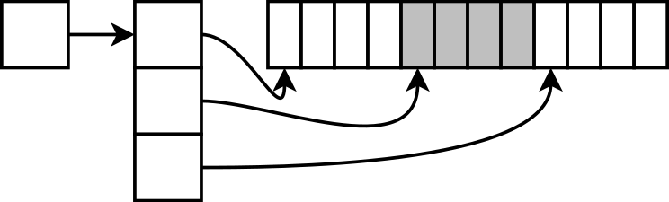
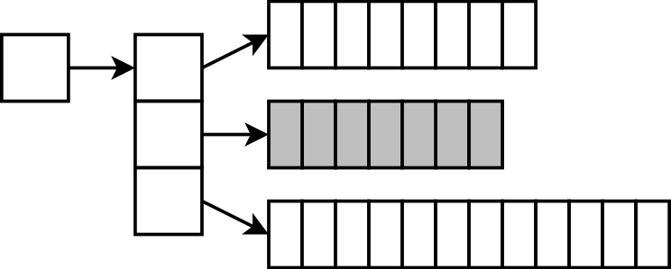

Mutatók létrehozása, cím képzése, indirekció
void novel(int *pi) {
*pi += 1;
}
int main(void) {
int i = 2;
novel(&i);
}A pointer egy változó címét (helyét) tárolja a memóriában. Egy
adott változóra ez a cím az & operátorral képezhető,
és a pointer típusú változóban eltárolható. Így az a pointer az adott
változóra hivatkozik, rajta keresztül elérjük a változót, aminek
a címét képeztük. Ha a pointert dereferáljuk a *
operátorral, akkor a változót kapjuk meg, amelynek értéke írható
és olvasható is a pointeren „keresztül”. Vagyis a dereferált
pointer is lehet balérték.
A pointer típusához hozzátartozik a mutatott változó típusa is, pl.
egészre mutató pointer típusa int*, karakterre mutató
pointer típusa pedig char*.
Így válik értelmessé a dereferálás, hiszen az csak
akkor értelmes művelet, ha tudjuk, hogy milyen típusú adatot
hivatkozunk a memóriában. A helye önmagában ehhez kevés.
Tömb elejére (vagy belsejébe) mutató pointerek
int tomb[4], *pi;
pi = tomb; // &tomb[0]
pi[2] = 4;
tomb[1] = 2;A tömbelemek helyének kiszámítására azért van lehetőség, mert tudjuk, hogy azok egymás mellett helyezkednek el a memóriában. Ha az első elem címét tudjuk, és a típusát, ezáltal a méretét ismerjük, kiszámítható a második, harmadik, akárhányadik elem címe is.
Akkor is ez történik, amikor az indexelő operátort használjuk; akár pointeren, akár egy tömbön magán. Kiszámítódik az adott elem címe, utána pedig az így keletkező pointer dereferálódik. C-ben így működik a tömbök paraméterként átadása is, ahogyan az a következő forráskódokon látható.
void tomb_kiir(int *tomb, int meret) {
for (int i = 0; i < meret; ++i)
printf("%d ", tomb[i]);
}int tomb[10];
tomb_kiir(tomb, 10);Akár változót adunk át cím szerint, akár egy tömböt a függvénynek, mindkét
esetben egy pointer adódik át. Önálló változó esetén ezt a pointert a *
operátorral dereferáljuk a függvényben, és így elérjük a változót.
Tömbök esetén elvileg egy címszámítás és egy dereferencia kell: *(tomb+i),
de ezt így írni fölösleges, sőt értelemzavaró, mert ehelyett találták ki az indexelő operátort.
Az itt bemutatott működés kellemetlen tulajdonsága az, hogy akár tömböt adunk át, akár önálló változóra mutató pointert, mindkét esetben a paraméter típusa mutató. Ezért ha látunk egy ilyen függvénydeklarációt:
void fuggveny(int *t);akkor ránézésre nem tudjuk megmondani, hogy ez a függvény egy darab integert vár cím szerint, vagy egy tömböt. Tömb esetén ezért a definiálatlan méretű tömbparamétert szokták használni néha:
void fuggveny(int t[]);De ez tökéletesen ugyanazt jelenti a fordító számára, mint az előbbi. Vagyis ilyenkor is egy pointer adódik csak át, és ilyenkor sem másolódik le a tömb, hanem az eredetit látjuk! Ezért ez a forma meg ilyen szempontból lehet kicsit megtévesztő.
/* a világ utolsó C bugja */
while (true) {
status = GetRadarInfo();
if (status = true)
LaunchMissiles();
}
Nem mindig szeretnénk, ha a cím szerint átadott változót meg tudná változtatni a függvény!
Például egy kereső függvénytől, vagy egy tömb tartalmát kiíró függvénytől nem várjuk, hogy megváltozzon a hívás során a tömb
értéke, és ha ilyet hibázunk, arra a fordító sem figyelmeztet. A const kulcsszóval tudjuk jelezni egy adatnál, hogy
azt nem szabad megváltoztatni. Ha véletlenül mégis így tennénk, a fordító jelezni fogja.
Nem változtatjuk a cím szerint átadott változót?
void kiir(int const *tomb, int meret) { // int const
...
}
int tomb[100] = { ... };
kiir(tomb, 100);int const * – ez azt jelenti, hogy ez a mutató konstans integerekre mutat. Vagyis hogy meg lehet hivatkozni a
mutatott értékeket (a tömb elemeit), és ki is lehet olvasni azokat, de változtatni nem lehet rajtuk. Vagyis pl. egy értékadást nem
fog engedni a fordító, hanem fordítási hibával visszadobja a programot.
A függvényhívás helyén a tömb kezdőcíme elvileg int * típusú. Ezt a fordító automatikusan konvertálja int
const *-gá; ilyenkor persze igazából semmi nem történik, ez csak egy jelzés, hogy a függvényen belül már tilos a
változtatás. Egy adott típusról ugyanolyan típusú konstanssá automatikus a konverzió. A másik irányba viszont értelemszerűen
tiltott: ha egy konstans pointer sima pointerré alakulhatna vissza automatikusan, akkor az egésznek semmi értelme nem lenne.
A konstansoknak egyébként kiváló „öndokumentáló” szerepük is van. Ha olvassuk a kódot, és látjuk valamiről, hogy konstans, akkor hamarabb megértjük a program működését – hiszen egyből látjuk, mi a konstans, és mi a változó.
A konstansokat kétféleképpen szokták írni: int const és const int. Mind a kettő
ugyanazt jelenti: a számokat konstansnak tekintjük. Az utóbbi időben elterjedtebb az int const forma, mert az
logikusabb, ha mindig azután írjuk, hogy const, ami konstans. (Pl. int * const azt jelenti, hogy az
integereket lehet változtatni, de a pointert nem lehet máshova állítani, mert nem az int, hanem a * után
írtuk a const szót. Így *p = 2 lehetséges, p++ viszont nem. Erről a második félévben lesz
szó részletesebben.)
Nem akarjuk lemásolni a nagy struktúrát, de változtatni se szeretnénk?
Előfordulhat, hogy egy nagy struktúrát cím szerint adunk át egy függvénynek – nem azért, hogy meg tudjuk változtatni, hanem csak mert nem szeretnénk feleslegesen lemásolni, mert az nagyon lassítaná a programunkat.
struct Rajz { ... };
void megjelenit(Rajz const *r) { // Rajz const
...
}
Rajz r;
megjelenit(&r);Itt hasonló a helyzet, mint az előző esetben. Ha a függvény belsejében esetleg r->szelesseg = 3;-at
írnánk, vagy hasonlót, akkor a fordító jelezni fogja a hibát: a megjelenit() függvény azt ígérte, nem fogja a rajzot
megváltoztatni, ennek ellenére módosítani próbálja.
A karbantarthatóság egyik alapfeltétele: az olvashatóság.
for (y = 0; y < 480; ++y)
for (x = 0; x < 640; ++x)
putpixel(x, y, 133, 224, 89);int const magas = 480;
int const szeles = 640;
Szin const zold = { 133, 224, 89 };
for (y = 0; y < magas; ++y)
for (x = 0; x < szeles; ++x)
putpixel(x, y, zold);Ha a programunkat egy másik felbontásra szeretnénk átállítani, elegendő mindössze a két konstans értékét felülírni és a következő fordításnál már minden algoritmus az új értékekkel fog dolgozni.
Ha a konstansok helyett számokat használtunk volna, akkor minden előfordulásnál felül kéne írni őket. Ez fáradságos munka, és hibalehetőségeket is rejt magában: elég egy helyen elfelejteni az átírást, és egy nehezen megtalálható hibát vittünk a programba.
A konstansok „furcsa állatok”. Ezek tulajdonképp konstans
változók: az oxymoron mindkét fontos tulajdonságukat kifejezi.
Konstansok, mert a létrehozás után már nem lehet őket megváltoztatni.
Változók, ugyanúgy van helyük a memóriában, értéket kaptak a
létrehozásuk pillanatában – és nem lehet velük tömb méretét megadni!
Az utóbbi ok miatt konstans egészeket gyakran az enum kulcsszóval
hozunk létre, bár az eredendően nem erre való.
1. A program írásakor nem tudjuk előre, mennyi memória kell.
- Felülbecsüljük? Alulbecsüljük? Egyik sem túl jó ötlet.
int tomb[1000], n;
printf("Hány szám? ");
scanf("%d", &n);
for (int i = 0; i < n; ++i)
tomb[i] = ...Ha felülbecsüljük a tömb méretét, túl sok memóriát használ a programunk feleslegesen. Ha alulbecsüljük, akkor pedig egyszerűen nem fog működni: túlindexelés lesz benne.
2. Nem tudjuk kontrollálni az élettartamot.
- Függvény lokális változója: csak a függvényen belül létezik
char *beolvas(void) {
char s[200];
scanf("%s", s);
return s;
}Az élettartam problémája: például egy globális változó akkor
is létezik, ha éppen nincs rá szükség, és ilyenkor feleslegesen foglalja a
memóriát. A lokális változó meg megszűnik, ezért ott nem tudunk eredményt
létrehozni a hívó számára – hacsak nem másoljuk le. A fenti
beolvas() függvény kifejzetten hibás: a függvényből visszatérve
megszűnik az s[] tömb, ezért az arra mutató pointer érvénytelenné
válik (dangling pointer).
3. A hatalmas tömb, amit szeretnénk, nem fér a verembe.
A lokális változókat tároló, verem nevű memóriaterület általában viszonylag kicsi szokott lenni. Nem jó ötlet ezért túl nagy tömböket használni lokális változóként, mert azt a memóriaterületet fogjuk elhasználni, amire szükségünk van a függvényhívások kivitelezéséhez!
Mi dönthetjük el:
- Mennyi memóriát foglalunk
- Mikor foglalunk memóriát, és mikor szabadítjuk fel
A „dinamikus memóriakezelés” azt jelenti, hogy egyes memóriaterületek foglalását és felszabadítását mi vezéreljük a programból. A „dinamikus” szó az időre utal.

Mindennek van ára...
A fentiekért cserébe a saját felelősségünk
- a foglalás, és
- a felszabadítás is.
Ha elfelejtjük megtenni, a programunk folyton növekszik, és előbb-utóbb le kell állítani...
- Ez vagy a felhasználónak kellemetlen,
- Vagy nekünk, ha ezt az operációs rendszer kénytelen megtenni.
Gondoljunk bele, a dolog néha kényelmetlen, ugyanakkor nagyon hasznos tud lenni. Ha egy adott memóriaterületre csak egy bizonyos ideig van szükség, akkor lefoglalhatjuk csak akkor, amikor először kell, és felszabadítatjuk, amikor már nem kell. Így a programunk kevesebb memóriát foglal.
Másrészt pedig nem kell pazarlóan felülbecsülnünk a méretet, és nem kell attól sem félni, hogy alulbecsüljük azt a program tervezése során. Amikor már tudjuk, mennyi memória kell, csak akkor foglalunk. Például két sztring összefűzve: megnézzük a két összefűzendő sztring hosszát, és az alapján tudjuk, hogy az összefűzött számára mennyit kell foglalnunk. Vagy megnyitunk egy fájlt, megnézzük, milyen hosszú, lefoglalunk annyi memóriát, és beolvassuk az egészet.
A malloc() és free() függvénypárost
biztosítja a C nyelv a dinamikus memóriakezelés megvalósítására.
void *malloc(size_t méret)Lefoglal egy bájtban megadott méretű memóriaterületet (malloc: memory allocation).
- Visszaad egy címet a legfoglalt területre.
- A terület mérete
méretbájt, és inicializálatlan (memóriaszemét). - Azért
void*, mert nem ismeri a típusunkat. - Ha nem sikerül, akkor
NULLpointert ad.
void free(void *ptr)Felszabadít egy memóriaterületet, amit a malloc() foglalt.
- A
malloc()által adott címet kell neki adni.
Feladat: írjunk programot, amiben a felhasználó bárhány számot tud adni; ezeket mind tároljuk el!
#include <stdio.h>
#include <stdlib.h>
int n;
printf("Hány számot? ");
scanf("%d", &n);
double *tomb;
tomb = (double*) malloc(n * sizeof(double)); // foglalás
if (tomb == NULL) {
printf("Nem sikerült memóriát foglalni!\n");
return false; // pl. hibajelzésként
}
tomb[3] = 12; /* tesszük a dolgunkat */ // tömbre mutat!
free(tomb); // felszabadításA lefoglalt területre egy void* mutatót kapunk. Ez azért mutat void, vagyis ismeretlen
típusra, mivel a malloc() nem tudja, milyen típusúak a lefoglalt területen tárolt adataink. (Nem is tudhatja, hiszen a
malloc() a nyelvbe van beépítve, vagyis nem lehet felkészítve az összes általunk létrehozott típusra, pl. a saját
magunk által definiált felépítésű struktúrákra.) Ezt a void* típusú pointert átalakítjuk a saját típusunkra mutató
pointerré (type cast), jelen esetben double* típusúvá, és így tároljuk el a pointerünkben.
A malloc() semmit nem tud a lefoglalt területünkről, a méretét nekünk kell kiszámítani, és bájtokban megadni. Itt
egy tömböt foglalunk, ezért a legegyszerűbben ezt egy szorzással tehetjük meg. A sizeof operátor egy adott típus
méretét bájtban megadja; pl. sizeof(double) annyi lesz, ahány bájtos egy double szám. Ha ezt megszorozzuk
a tömb elemszámával, akkor éppen a kérdéses méretet kapjuk. A lefoglalt terület inicializálatlan, vagyis memóriaszemetet
tartalmaz.
Innentől kezdve a pointeren keresztül el tudjuk érni a memóriaterületet. Vegyük észre, hogy a tomb nevű
változó nevével ellentétben nem tömb, hanem pointer, de mivel tömbre mutat, tudjuk, hogy indexelhető is. Kényelmes itt nagyon, hogy
a pointereken is használható az indexelő operátor, hiszen a használat közben nem is kell foglalkozni vele, hogy a tömb statikusan
vagy dinamikusan lett lefoglalva. Ugyanúgy működik az indexelő operátor, ugyanúgy átadható függvénynek (hiszen a tömbös függvények
eddig is pointert vártak) és így tovább. Túlindexelni természetesen nem szabad.
Ha végeztünk, és már nincsen szükség az adatokra, akkor visszaadjuk a lefoglalt területet. Ehhez átadjuk a free()
utasításnak azt a pointert, amit a malloc()-tól kaptunk (ezzel azonosítja, hogy melyik területről van szó). Elvileg
ugyan a free() egy void* típusú pointert vár, de ilyenkor a típus konverzióját nem kell elvégezni, mert a
valami*→void* konverzió automatikus. Miután felszabadítottuk a memóriaterületet, már nem szabad
hivatkozni azt! Hiszen azt egy másik malloc() hívás másra használhatja, vagy bármi más történhet vele. Ha így
teszünk, az nagyon súlyos hiba! Mivel azonban a pointer megmarad, érdemes lehet azt NULL-ra állítani, hogy észre
tudjuk venni ezt a programozási hibát.
A pointer létrehozását és inicializálását alapvetően egy sorba illik írni. Vagyis a fenti kód inkább így kéne kinézzen:
double *tomb = (double*) malloc(n * sizeof(double));A külön sorban írt verzió azt kívánta bemutatni, hogy tulajdonképp a pointer és a lefoglalt memóriaterület külön életet él.
A C nyelv C99-es verziójátók kezdve lehetőség van arra, hogy malloc() hívás nélkül hozzunk létre olyan tömböt,
amelynek mérete futási időben derül ki. Ilyen tömb csak függvény lokális változója lehet, és bár a mérete nem fix, de az
élettartama igen, hiszen a függvényből visszatérve meg fog szűnni. Vagyis a fentit akár így is írhatjuk (természetesen a
free() hívást is elhagyva):
printf("Hány számot? ");
scanf("%d", &n);
double tomb[n];
...A változóval megadott méretű tömböket a különböző programozási nyelvek vagy támogatják, vagy nem. A Pascal és a C++ nem
támogatja, a C99 igen. A programunk tervezésekor figyelembe kell vennünk, hogy egy meg nem adott méretű tömböt esetleg dinamikus
memóriakezeléssel tudunk csak majd megvalósítani a választott programozási nyelven. Figyelembe kell vennünk azt is, hogy a verem
mérete általában jóval kisebb, mint a dinamikusan, malloc()-kal foglalható memória mérete. Így ezt csak kisebb
tömbökre használhatjuk. További peremfeltétel, hogy bár a veremben, automatikus lokális változóként hozható létre így tömb,
adatszerkezet része (pl. struktúrában) sem lehet ilyen.
Feladat: írjunk függvényt, amely összefűz két, paraméterként kapott sztringet! A függvény visszatérési értéke legyen az összefűzött sztring!
Ebben dinamikus memóriakezelést kell használnunk. Nem csak azért, mert nem tudjuk előre, hogy mekkora lesz a tömb, hanem azért is, mert a függvényből visszatérve a lefoglalt tömbnek meg kell maradnia. Az semmiképpen nem lehet a függvény lokális változója!
/* visszatér egy sztringgel, ami s1 és s2 összefűzve.
* a hívónak fel kell szabadítania a kapott sztringet! */
char *osszefuz(char const *s1, char const *s2) {
int mennyi = strlen(s1) + strlen(s2) + 1;
char *res = (char*) malloc(mennyi * sizeof(char)); // !
if (res == NULL)
return NULL;
strcpy(res, s1);
strcat(res, s2);
return res;
}Látható, hogy így meg tudjuk oldani az élettartam problémáját is. A függvényből visszatérve ugyanis az új sztringet tároló
memóriaterület nem szabadul fel automatikusan, hanem a hívó döntheti el, hogy mikor nincsen már a továbbiakban szüksége arra.
Vissza ez a függvény nem a sztringet adja, hanem csak egy pointert a lefoglalt memóriaterületre. A lokális
char *res változó ugyan megszűnik, de azt a visszaadáskor lemásoljuk! (Csak a pointert! Nem az egész tömböt!)
Amikor visszatérünk, a létrehozott tömb így nem szűnik meg!
char *str;
str = osszefuz("alma", "fa");
printf("%s", str);
free(str); // !A függvény visszatér egy pointerrel a lefoglalt területre. Valakinek a foglalt területet fel is kell szabadítania – a hívó
felel érte, hogy fel legyen szabadítva. Fontos figyelni arra, hogy ezt megtegyük, ha már nincsen rá szükség. Mivel az
osszefuz() függvény ezt nem teheti meg (hiszen épp az a feladata, hogy foglalja le a sztringet, és ne
szabadítsa fel), ez csakis a hívó feladata és felelőssége lehet.
Emiatt a visszakapott pointert el kell mentenie
egy változóba, hiszen ha elfelejti, akkor semmi mód nem lesz már arra, hogy felszabadítsa azt a memóriaterületet. Természetesen az
str = osszefuz(...) értékadás ilyenkor nem sztring másolás, hanem csak egy pointer értékadás. Hiszen s
típusa pointer, a visszaadott érték is pointer, és ezt másoljuk az értékadással.
Függvény által foglalt dinamikus memória
Fontos: ha a hívó dolga a felszabadítás, azt a tényt dokumentálni kell! Ha a változó élettartama átível a függvényeken, bízzuk rá valakire, Rendeljük valakihez a felelősséget!
A lefoglalt terület felszabadításának garantálására egy jó eszköz az, ha valakihez hozzárendeljük a felelősséget. Például a
int *fuggveny(void) függvény dokumentációjában leírjuk azt, hogy a visszaadott pointer egy olyan memóriaterületre
mutat, ahol az eredmény van; és hogy azt később a hívó dolga lesz felszabadítani, ha már nincsen rá szüksége. Ezzel azt
jelöljük ki, hogy ki annak az erőforrásnak a tulajdonosa. Maga a malloc()–free() függvénypáros
is ilyen. A malloc() lefoglal egy területet, és az a program tulajdonába kerül. Felelőssé válik is ezáltal azért, hogy
később a free() függvényt meghívja.
Az alábbi játékszabályokat tökéletesen kell érteni, a legutolsó bitig. A be nem tartásuk a legsúlyosabb programozási hibák közé tartozik!
- A lefoglalt memóriaterületet fel kell szabadítani.
- Ahány
malloc()hívás, annyifree()hívás kell történjen.
- A
malloc()által adott pointer szemünk fénye! - Ha elveszítjük, nem tudjuk majd azt a területet visszaadni.
- Allokálatlan memóriaterület nem használható!
-
A pointer megléte nem jelenti azt, hogy a „mögötte” lévő memóriaterület is létezik!
char *szoveg; szoveg[2] = 'x';Itt a pointer még memóriaszemét, nincs tömb!
free(szoveg); szoveg[2] = 'x';Ha felszabadítottuk, akkor már nincs.
- Hogyan lehet lekérdezni, hogy hány elemű tömböt foglaltunk?
- Sehogyan, nekünk kell tudni.
- Hogyan lehet ellenőrizni, adott terület le van-e foglalva?
- Sehogyan, nekünk kell tudni.
Ezek nagyon fontosak. Különösen nem szabad egy dinamikus tömbön a
sizeofoperátort használni – hiszen az nem a tömb méretét, hanem a pointer méretét fogja megadni!
- Lehet nulla méretű területet foglalni?
- Lehet, de fel is kell szabadítani.
- Szabad
free(NULL)hívást csinálni? - Szabad.
Miért lényeges az előző kettő? Leginkább azért, mert ez sok helyen egyszerűsíti a programunkat. Ha olyan
feladatunk van, ahol a beolvasott adatokkal nyújtjuk a tömböt, akkor a sor elején, amikor még nem érkezett adat, a nulla elemű
tömböt nem kell speciális esetként kezelni. A malloc(n * sizeof(Valami)) kifejezésben az n értéke lehet
0, nem fog tőle hibásan működni a programunk.
Hasonló a free(NULL) esete is. Nem kell if (p != NULL)-t írni egy
free(p) hívás elé, ha olyan a programunk felépítése, hogy néha le van foglalva a memóriaterület, néha nincs. Ez az
ellenőrzés be van építve a free() függvénybe, és NULL pointerre nem csinál semmit.
Tartsuk nyilván, mekkora a lefoglalt terület!
A méret és a pointer összetartozó adat – rakjuk struktúrába! Hiszen éppen erre való a struktúra: tartsuk egy helyen, ami összetartozik.
typedef struct DinTomb {
double *adat;
int meret;
} DinTomb;DinTomb dt;
dintomb_foglal(&dt, 100); // inicializálás
dt.adat[34] = 19; // használat
dintomb_kiir(&dt);
dintomb_atmeretez(&dt, 200);
dintomb_felszabadit(&dt); // felszabadításAmikor létrehozzuk a dt nevű struktúrát, akkor a tömbnek természetesen nem lesz
még memória lefoglalva, mert a struktúrában csak egy pointer és egy egész szám van. Ezért a foglaláshoz
írunk egy függvényt: ennek feladata a memóriaterület lefoglalása, és az adatok beírása a
struktúrába. Mivel módosítja a struktúrát, ezért arra mutató pointert kell átvegyen.
Ezután már használhatjuk a tömböt. A struktúra előnye itt is látszik: egy ilyen tömböt egyetlen paraméterrel át tudunk adni. Nem kell megadnunk a pointert és a méretet is, hanem elég csak a struktúrát megmutatni, hiszen abban benne van minden információ.
Minden függvény, amelynek egy ilyen struktúrát átadunk, cím szerint kapja azt: hogy tudja módosítani. A struktúrákra mutató pointerek használatához a C-nek van egy nyelvi eleme, a nyíl operátor.
bool dintomb_foglal(DinTomb *dt, int meret) {
dt->meret = meret;
dt->adat = (double*) malloc(meret * sizeof(double));
return dt->adat != NULL; // sikerült?
}
void dintomb_kiir(DinTomb const *dt) {
for (int i = 0; i < dt->meret; ++i)
printf("%f ", dt->adat[i]);
printf("\n");
}
void dintomb_felszabadit(DinTomb *dt) {
free(dt->adat);
}A kiíró függvény ugyan nem kellene pointerével átvegye a struktúrát (mert
úgysem akarja megváltoztatni), de egyszerűbb így megoldani. Nem kell majd fejben tartani, hogy
melyik függvény várja értékként és melyik címként a paramétert, hanem mindegyik címként, így
mindegyiknél ki kell írni az & operátort. Ez azoknak kényelmes, akik használják
a függvényt. A pointer viszont ebben az esetben konstans adatra mutat: ezzel jelezzük azt, hogy a függvény,
bár cím szerint veszi át a struktúrát, megváltoztatni nem szeretné azt.
Az alábbi függvény átméretezi a dinamikus tömböt. Ha a tömb zsugorodik, a végén lévő adatok elvesznek. Ha nyúlik, akkor a végén memóriaszemét lesz – a használó feladata, hogy oda érvényes adatot tegyen.
bool dintomb_atmeretez(DinTomb *dt, int ujmeret) {
double *ujadat = (double*) malloc(ujmeret * sizeof(double));
if (ujadat == NULL)
return false;
int min = ujmeret < dt->meret ? ujmeret : dt->meret;
for (int i = 0; i < min; ++i)
ujadat[i] = dt->adat[i];
free(dt->adat);
dt->adat = ujadat; // !
dt->meret = ujmeret;
return true;
}A dinamikus tömb átméretezésének lépései a következők:
- Lefoglaljuk az új (kisebb vagy nagyobb) memóriaterületet.
- Átmásoljuk az adatokat az új helyre.
- Felszabadítjuk a régi tömböt: az adatok már megvannak az új helyen.
- Végül pedig, átállítjuk a pointert az új tömbre.
Leginkább az utolsó lépésen érdemes elgondolkodni. Ezen a ponton már nincs szükség arra, hogy megint foglaljunk egy tömböt, és megint másoljuk az adatokat: a pointer beállítható az új tömbre! A dinamikus tömbök és a pointerek egymástól függetlenek, ezért a pointert bármikor, bármelyik tömbre rá lehet állítani.
A lépések sorrendje nyilván azért alakult így, mert a pointerünket az új, kisebb vagy nagyobb tömbre átállítani
akkor lehet, amikor a régi tömböt már felszabadítottuk a free() függvénnyel. Ha előbb hajtanánk végre
a dt->adat = ujadat értékadást, akkor a régi tömböt már nem tudnánk felszabadítani (elszivárgó
memóriaterületté válna).
void *calloc(size_t darabszám, size_t egyelem)Lefoglal egy tömböt és kitölti 0 bájtokkal.
- Első paraméter: a tömb elemszáma, második: egy elem mérete
- Pl.
int *tomb = (int*) calloc(100, sizeof(int)); - Vigyázat! Ez nem biztos, hogy a csupa 0 bájt jó nekünk!
Pl. lehet, a
NULLpointert nem csupa 0 bitsorozat jelöli. Acalloc()ezért csak számokhoz (int,char...) jó.
void *realloc(void *ptr, size_t méret)Újrafoglalja, átméretezi a ptr által mutatott dinamikus tömböt.
- A meglévő adatokat másolja
- Ha nagyobb lett, a többi memóriaszemét. Ha kisebb, a vége elveszik
- Vigyázat! Lassú lehet!
Vigyázni kell a realloc() függvénnyel, mert lassú
lehet. A megnagyobbított tömb lehet, hogy nem fér el az adott memóriaterületen (mert
utána is van lefoglalva egy másik változó), és ilyenkor a realloc()
kénytelen az egész tömböt egy teljesen másik helyre átmásolni. Ne írjunk olyan programokat,
amelyek gyakran méreteznek át tömböket!
Egy változó definíciójának helyétől függ, hogy hol jön létre.
A definíció módja alatt főként a definíció helyét értjük.
Ha egy függvény belsejében azt mondjuk, hogy int x, az mást jelent
(lokális változót), mintha függvényen kívül írjuk ugyanazt az int x-et
(globális változót). Ez egyben a változó élettartamát is meghatározza.
Ezeket a helyeket tárolási osztályoknak nevezzük (storage class):
- Globális változók memóriaterülete (data segment),
- Lokális változók memóriaterülete (stack segment),
- Dinamikusan foglalt memóriaterület (heap, free store).
A három memóriaterület mérete változik is. A globális
adatterületen mindig ugyanannyi adat van. A veremben lévő adatok mennyisége
függvényhívásokkor nő, visszatéréskor pedig csökken. (Így aztán pl. a
main() változói mindig ott vannak a „legalján”.) A kupac mérete is
változik, a lefoglalt-felszabadított területek nagyságától függően.
Természetesen a fentiek nem azt jelentik, hogy a számítógépben valójában is többféle memória van. Csak annyit, hogy ugyanannak a memóriának egyes részeit máshogyan kezeljük, és más célból teszünk oda változókat. A pointerek viszont bármelyik memóriaterület változóira tudnak mutatni.
Itt vannak a globális változók. Ugyancsak itt vannak a névtelen sztring konstansok is.
#include <stdio.h>
int x = 7;
char sz[15] = "szöveg";
char *p;
int main(void) {
p = sz;
printf("Helló világ");
return 0;
}A globális változók a program futása alatt mindvégig léteznek. Egyszerűen úgy adjuk meg őket, hogy nem függvény belsejében, hanem függvényen kívülre írjuk a definíciójukat.
A függvények statikus változói megőrzik értéküket a hívások között.
A globális változókhoz hasonlóan „örökéletűek” a függvények static
kulcsszóval jelzett változói is: megmaradnak a program futásának végéig, és
megőrzik értéküket. Léteznek azután is, miután visszatérünk a függvényből.
(A static kulcsszót a változó definíciója elé tesszük, a tárolási
osztályt jelöli meg. A neve ilyenkor: storage class specifier.) Példa:
#include <stdio.h>
int hanyszor_hivodott(void) {
static int hanyszor = 0; // !
hanyszor += 1;
return hanyszor;
}
int main(void) {
printf("%d\n", hanyszor_hivodott()); /* 1 */
printf("%d\n", hanyszor_hivodott()); /* 2 */
printf("%d\n", hanyszor_hivodott()); /* 3 */
return 0;
}Röviden: a függvények statikus változói láthatóságban úgy viselkednek, mint a lokális változók (csak a függvényben látszanak), élettartamukban viszont úgy, mint a globális változók („örökéletűek”).
Ezt a nyelvi elemet ritkán használjuk. Nem is igazán ajánlott ilyen függvényeket írni, mert
az olvashatóságot rontja, ha egy függvény visszatérési értéke nem kizárólag a bemeneti
paraméterek értékétől függ. Sok beépített, könyvtári függvény használja azonban, ezért fontos,
hogy ismerjük és tudjuk, hogy mi történik a háttérben. Ilyen például a strtok(),
amely arra használható, hogy egy szöveget bizonyos határoló karakterek mentén feladaraboljunk.
Például a "Szia, ez itt egy proba. Futtass le!" szöveget úgy darabolhatjuk fel szavakra, hogy
határoló karakterként megadjuk a következő karaktereket: ' ', ',', '.' és '!'.
#include <stdio.h>
#include <string.h>
int main(void) {
char str[] = "Szia, ez itt egy proba. Futtass le!";
char *pch;
printf("Az eredeti szoveg: %s\n",str);
pch = strtok(str, " ,.!");
while (pch != NULL) {
printf("%s\n", pch);
pch = strtok(NULL, " ,.!");
}
return 0;
}Látható, hogy az strtok() függvény első hívásakor megadjuk a feldolgozandó
sztringet, de a későbbiekben már NULL pointerrel hívjuk. Honnan tudja hát, hogy
milyen szövegen dolgozzon? A másik talány pedig az, hogy hogyan tudja megjegyezni, hogy hol tart
a szövegben, hiszen minden híváskor a soron következő szóval tér vissza.
Mindkét kérdésre a static változó a megoldás: amikor egy nem NULL
pointerrel hívjuk meg, akkor egy static char* típusú változó értékében elmenti ezt
a címet. Elkezd a sztringgel dolgozni, visszatér az első szóval és a static változó
értékét beállítja a soron következő szó elejére. A következő hívásnál NULL
pointerel hívjuk, így tudja, hogy folytatnia kell egy korábbi sztringet. A cím pedig, amivel
dolgoznia kell, el van tárolva a static változóban.
A verem (stack) legtetején jönnek létre a lokális változók, és szűnnek meg, ha visszatérünk a függvényekből.
void fv(void) {
char sz[10] = "HELLÓ";
char *p = "helló"; // !
}
int main(void) {
int x = 7;
fv();
} A verembe kerül a main() függvény x változója, és az fv()
függvény sz, illetve p változója is. Ha az fv() függvény visszatér, az utóbbi kettő
törlődik. Így a veremben lévő adatok mennyisége folyamatosan változik a függvényhívások és visszatérések során. Az „örökké” létező
globális változókkal szemben ezek csak addig léteznek, amíg a függvény belsejében vagyunk. Ugyanazon függvény újbóli meghívása
esetén újra létrejönnek, újra inicializálódnak (ha van megadva kezdeti érték) – tulajdonképpen azok már másik változók.
Vegyük észre, hogy a függvény sz[] tömbje és p pointere másképp működik! A lokális változó az
sz[] tömb és a p pointer; a kisbetűs "helló" sztring nem lokális változó! Ez a char
*p pointer által mutatott sztring a globális memóriaterületre került. Miért? Azért, mert a fordító csinálja, amit mondtunk.
A p nevű lokális változó típusa char*, azaz a vermen létrehozott egy pointert. A névtelen sztring
konstansok globális memóriaterületre kerülnek, ezért az a kisbetűs „helló” sztring oda került. Ez a sztring most névtelen,
mivel a p változó definiálásával nem tömböt, hanem pointert kértünk. Ezzel szemben az sz változó típusa
char[10], vagyis egy karaktertömb. Mivel tömböt definiáltuk, az egész nagybetűs „HELLÓ” a verembe került.
A p pointernél azt mondtuk, hogy legyen egy pointer, ami egy máshol foglalt karaktertömbre mutat. Olyasmi, mintha
ezt írnánk: char sztring[] = "hello";, utána char *p = sz;. Az sz[] tömbnél pedig azt, hogy
legyen egy tömb, aminek a tartalma az adott sztring. Emiatt egyébként a két tömb mérete eltérő! A névtelen tömb, amelyik a globális
területen van (attól még, hogy van egy pointer, amelyik mutat rá, névtelen!), egy hat karakterből álló tömb, hiszen öt plusz egy
lezáró nulla. Az sz[] tömb ezzel szemben tíz karakterből áll, mert akkorának definiáltuk.
Innen foglalódik le az a memóriaterület, amit a malloc()-tól kapunk.
int main(void) {
int *t;
char *p;
t = (int*) malloc(100*sizeof(int));
t[0] = 3;
t[1] = 6;
p = (char*) malloc(20*sizeof(char));
strcpy(p, "helló");
...Figyeljük meg, hogy a fenti kódban az int *t és a
char *p lokális változói a függvénynek. Tehát ezek a veremben fognak létrejönni. Egészen addig
nem is mutatnak semmilyen memóriaterületre (pontosabban: véletlenszerű helyre mutatnak,
mert inicializálatlanok), amíg nem adunk nekik értéket. Ez az értékadás mindkét esetben a
malloc() hívása után történik meg; a foglalást a malloc() végzi, a
pointer megjegyzéséért pedig az értékadások felelnek.
| definíció | sizeof(str) | strlen(str)
|
|---|---|---|
char str[50] = "hello" | 50 | 5 |
char str[20] = "hello" | 20 | 5 |
char str[] = "hello" | 6 | 5 |
char *str = "hello" | gépfüggő! | 5 |
int sztring_hossz(char *s) {
/* ... */
}
printf("%d", sztring_hossz("hello"));Ezért nézzük a sztring méretét az strlen() függvénnyel! A
sizeof a tömb vagy a pointer méretét adja.
Az utolsó sorban a pointer mérete látszik – ez géptípusonként más.
Érvénytelen pointerek (dangling pointer): olyan pointerek, amelyek már megszűnt változóra mutatnak.
Mutató felszabadított memóriaterületre:
int *p = (int*) malloc(100*sizeof(int));
p[2] = 12;
free(p);
printf("%d", p[2]); // hibás!!!A felszabadítás után a p érvénytelen pointerré válik. Ilyenek lesznek a programjainkban sokszor,
nincsen velük baj; az a baj, ha rajtuk keresztül a már megszűnt változót megpróbáljuk elérni. Könnyen előfordulhat, hogy
teszteléskor nem vesszük észre a hibát, mert ha az a memóriaterület még nem íródott felül, akkor kiolvasva azt az adatot kapjuk,
amit látni szeretnénk.
Mutató lokális változóra:
int *fv(void) {
int i = 7;
return &i; // hibás!!!
}
int *ptr = fv();
Ezt sem biztos, hogy észrevesszük tesztelésnél. Az adott memóriaterületen később még lehet, hogy ott lesz az érték, amire számítunk, és akkor látszólag a program helyes. Némely fordítók szerencsére néha felfedezik ezt a hibát. Pl. a gcc kimenete a fenti példára:
proba.c:4:4: warning: function returns address of local variableUgyanezért hibás az előadás elején mutatott
beolvas() függvény is.
A tömb a veremben van, és megszűnik, ha visszatérünk a függvényből, hiába olvastunk
be akármit a billentyűzetről:
char *beolvas(void) {
char s[200];
scanf("%s", s);
return s; // hibás!!!
}Ezek nagyon súlyos programozási hibák.
Ha dinamikusan foglaljuk, a függvényből visszatérés után is lefoglalva marad, így átadhatjuk a hívónak:
int *beolvas_sokszam(int n) {
int *uj;
uj = (int*) malloc(n * sizeof(int));
...
return uj;
}
int main(void) {
int *s;
s = beolvas_sokszam(5);
...
free(s); // !Így lehet egyszerűen megoldani az előző dián említett problémát. Az a célunk, hogy ne tűnjön el a tömb, ezért átvesszük a memória kezelését a fordítótól. (Saját felelősségre! Mert a felszabadítás is a mi dolgunk.)
char *hello(void) {
return "hello";
}
printf("%s", hello());Helyes. A sztring globális memóriaterületen van, a függvényből visszatérés után is létezni fog. Szabad hivatkozni arra a memóriaterületre!
int *hello(void) {
static int tomb[5] = { 9, 4, 5, 6, 1 };
return tomb;
}
printf("%d", *hello());Helyes. A static kulcsszóval megjelölt lokális változó
megmarad a függvényből visszatérés után, vagyis az élettartama szempontjából majdnem úgy
viselkedik, mintha globális változó lenne. Erről még lesz szó később; memóriakezelés
szempontjából a lényeg itt az, hogy mivel megmarad a változó, a visszaadott pointer nem
dangling pointer lesz.
int *hello(void) {
int *tomb = (int*) malloc(10*sizeof(int));
tomb[0] = 12;
return tomb;
}
printf("%d", *hello());Helytelen! Bár megmarad, és szabad hivatkozni, de felszabadítani ki fogja?!
Ha nincs elmentve az a pointer, ami hivatkozik a memóriaterületre, akkor nem tudjuk odaadni a
free()-nek, és semmi módja nincsen a felszabadításnak! Sőt a függvény minden
meghívásakor újabb memóriaterület lesz lefoglalva. Előbb-utóbb a programunk sok száz megabájt
memóriát fog magánál tartani!
Több dimenziós tömb
int tomb[3][4]; // magas, széles
tomb[1][2] = 9; // y, xszéles*magas darab integer!
A fordító leképezi egydimenziós tömbre, amiben az elemek sorfolytonosan helyezkednek el.
Így akárhány dimenziós lehet. A tömb mérete szélesség*magasság integernyi.
Leképezés: tomb1d[y*szélesség+x].
Egy sor a tömbből
int osszeg(int *tomb, int meret);
int tomb[3][4] = {{…}, {…}, {…}}; // 3 sor, 4 oszlop
printf("%d", osszeg(tomb[1], 4)); // 1. sor: 1D tömb, 4 eleműA 2D tömb egyik sora: az egy 1D tömb!
A C a változók, függvények és függvényparaméterek deklarációjakor
ugyanazokat a precedenciaszabályokat érvényesíti, amelyeket a programkód elemzésekor is használ.
Ebből az következik, hogy a deklarációnál pont ugyanúgy kell megadnunk a tömböket, pointereket,
mint ahogyan azokat használjuk. Ezért kell egy tömböt int t[10] alakban megadni:
mivel ha a tömb neve mögé tesszük az indexelő operátort, akkor kapjuk meg a benne lévő
egész számot; és ezért kell a pointert int *p alakban megadni, mivel a pointer neve
elé tett * operátorral tudjuk dereferálni azt, kapva az egész számot.
Nézzünk példákat, hogyan lehet összetett deklarációkat alkotni! Első példa legyen a kétdimenziós tömb, azaz tömbök tömbje.
valami | tömbök tömbje egész számokból |
|---|---|
valami[3] | egész számok tömbje |
valami[3][4] | egy egész szám |
int valami[3][4] | a teljes deklaráció |
Ez tehát egy mátrix, azaz kétdimenziós tömb, amely összesen 3×4 = 12 elemet tartalmaz. A kapott
deklarációt értelmezni is tudjuk: a valami egy olyan dolog, aminek a kétszeri indexelése egy int-hez
vezet. Az első indexelés egy 3 elemű tömbön történik, 0...2 indexek lehetségesek. A második pedig az így kiválasztott
soron, amelyik egy 4 elemű tömb.
valami | egész számokra mutató pointerekből álló 4 elemű tömb |
|---|---|
valami[4] | egy egész számra mutató pointer |
*valami[4] | egy egész szám |
int *valami[4] | a teljes deklaráció |
A második táblázat int *valami[4] deklarációja azt jelenti, hogy a
valami nevű változót *valami[i] formában használva egy
int típushoz jutunk (ahol i valamilyen index). Mivel az indexelő operátor []
precedenciája magasabb, mint az indirekció * operátoráé, ez azt jelenti, hogy
az indexelés vonatkozik a változóra, a * pedig már az indexelés után kapott dologra.
Vagyis ha a valami-t megindexeljük, akkor kapunk egy dereferálható
értéket (egy pointert), amit dereferálva végül egy egész számhoz jutunk. A valami
nevű változó tehát egy tömb, ami int* mutatókat tartalmaz: pointerekből álló tömb.
valami | pointer 4 elemű egészekből álló tömb(ök)re |
|---|---|
*valami | 4 elemű tömb egészekből |
(*valami)[4] | egy egész szám |
int (*valami)[4] | a teljes deklaráció |
A zárójelezéssel tudjuk a precedenciaszabályok „ellenében” módosítani azt,
hogy mely operátorok mely operandusokra vonatkoznak. Az újabb deklaráció azt jelenti, hogy ezt a
valami-t úgy kell használni, hogy előbb dereferáljuk, utána pedig indexeljük, és
így kapunk majd egész számot. Szóval ez a valami egy pointer kell legyen egy olyan
helyre a memóriában, ahol indexelhető dolgok (tömbök) vannak, amiket indexelve egészeket kapunk.
Ez egy pointer egy négy elemű tömbre, vagy esetleg négy elemű tömbökre (első négy elemű tömb,
második négy elemű tömb és így tovább.)
Összetett deklarációk létrehozásához és értelmezéséhez jól használható a cdecl nevű program, amely elérhető online verzióban is a https://cdecl.org/ helyen.
Több dimenziós tömböt úgy tudunk átadni függvénynek, ha rámutatunk
egy pointerrel az első sorára. A pointer típusának azonban tartalmaznia kell azt az információt,
hogy milyen szélesek a sorok. Különben nem lehetne a sor kiválasztásánál tudni azt, hogy az egyes
sorok hol kezdődnek a memóriában. Ezért a paraméter egy tömbre mutató pointer kell
legyen, pl. int (*tomb)[4], ha a szélesség 4 elemnyi.
int osszeg_2d(int (*tomb)[4], int magassag) {
int sum = 0;
for (int y = 0; y < magassag; ++y)
for (int x = 0; x < 4; ++x) // fix
sum += tomb[y][x];
return sum;
}int osszeg_2d(int tomb[][4], int magassag);
int osszeg_2d(int (*tomb)[4], int magassag); // mindkettő jóFontos: így a tömb nem lehet akármilyen széles! A pointer aritmetika működése miatt (és a fentebb bemutatott
sorfolytonos leképezés miatt) a fordítónak mindenképpen ismernie kell a szélességet. Akármelyik formában adjuk át a tömböt, a
verembe a függvény számára mindig csak egy pointer kerül! Még akkor is, ha a fejlécbe int tomb[3][4]-et írunk, tehát
mindkét dimenziót kiírjuk. (Annak az esetnek az a furcsasága, hogy a 3-mal a fordító nem is foglalkozik. Annyira nem, hogy
akármilyen magas, 4 elem széles int tömbbel hívható az a függvény!)
A fentiek miatt a következő fejléc hibás. De ez amúgy sem meglepő; definiálatlan méretű tömb nem létezhet:
int hibas(int tomb[][], int szeles, int magas);Sztringet tömbjét kétféleképpen is létrehozhatunk. Az egyik, hogy tömbök tömbjét hozzuk létre. A másik pedig, hogy pointerek tömbjével dolgozunk, amelyben a pointerek sztringekre mutatnak.
char sztringek[3][12] = {
"hello vilag",
"almafa",
"hexdump"
};0000 68 65 6c 6c 6f 20 76 69 6c 61 67 00 hello vilag. 000c 61 6c 6d 61 66 61 00 00 00 00 00 00 almafa...... 0018 68 65 78 64 75 6d 70 00 00 00 00 00 hexdump.....
Összetett deklarációt alkotunk akkor is, amikor sztringek tömbjét hozzuk
létre. Ha egy sztring 12 bájtból áll: char sztring[12],
akkor a sztringek tömbje valami olyasmi kell legyen, amit ha megindexelünk, akkor
egy 12 bájtos karaktertömböt kapunk: char sztringek[3][12].
Természetesen az első indexeléssel a sztringet választjuk ki ebből, egy második
indexelés adná a karaktert; ezért a deklarációban az első méret a sztringek száma,
a második pedig a sztringek mérete.
char *sztringek[3] = {
"hello vilag",
"almafa",
"hexdump!"
};0000 22 00 00 3c "..< 0004 2e 00 00 3c ...< 0008 35 00 00 3c 5..<
Itt egy olyan típust alkottunk, aminek a használata nagyon hasonló az
előzőéhez; megindexelve egy pointert kapunk, ami akár egy sztringre, nullával lezárt karaktertömbre is
mutathat. Ebben az esetben azonban nem egy kétdimenziós tömbről van szó, amely a memóriában
sorfolytonosan helyezkedik el, hanem egy olyan tömbről, amely pointereket tartalmaz. Ha
megnézzük, mit találunk a memóriában a sztringek változó helyén, akkor ott a
szövegeket nem fogjuk megtalálni, csak három darab pointert! A sztringek ilyenkor globális
területre kerülnek.
Nézzük meg, hogyan lehet két dimenziós, dinamikus tömböket létrehozni, amelyeknek a szélessége és a magassága is tetszőlegesen megválasztható! Ugyanezek a gondolatmenetek általánosíthatóak bármennyi dimenzióra.
0. módszer: 1D leképezés
Mi magunk végezzük el a leképezést. Ezzel egyszerűen kikerüljük a problémát. Megold mindent, de sajnos nehézkes használni. (Mindenhol a szorzós képletet kell beírni az indexbe.)
double *szamok;
szamok = (double*) malloc(szelesseg*magassag * sizeof(double));
szamok[y * szelesseg+x] = 3.14; // szamok[y][x] helyett :(
fv(szamok, szelesseg, magassag); // fv(double*, int, int)
free(szamok);1. módszer: soronkénti foglalás
Minden sort külön foglalunk le. Az egyes sorokhoz tartozó pointereket egy pointertömbbe
tesszük, amelyet szintén dinamikusan foglalunk (hogy a magasság is tetszőleges legyen). Ha így
teszünk, a lefoglalt tömböt a megszokott módon használhatjuk, két egymás utáni indexeléssel, pl.
szamok[2][3]. Az első indexelés a pointerek tömbjéből (a rajzon a függőleges)
kiválaszt egy pointer, a második indexelés pedig már az ezáltal mutatott tömbön történik (a
rajzon valamelyik vízszintes).
Természetesen a pointerek tömbjét kell előbb foglalni, utána a sorokat; mert az előbbibe
tesszük be a sorok pointereit. A felszabadításnál ugyanez visszafelé történik: amíg a sorokat
szabadítjuk fel, addig szükségünk van a pointerekre, ezért a pointerek tömbje lesz az, amit
legutoljára szabadítunk fel. A módszer hátránya az, hogy sok malloc() hívás kell
hozzá, ami lassabb, mintha csak egy vagy kettő lenne.
double **szamok;
/* foglalás */
szamok = (double**) malloc(magassag * sizeof(double*));
for (y = 0; y < magassag; ++y)
szamok[y] = (double*) malloc(szelesseg * sizeof(double));
/* használat */
szamok[y][x] = 3.14;
fv(szamok, szelesseg, magassag);
/* felszabadítás */
for (y = 0; y < magassag; ++y)
free(szamok[y]);
free(szamok);2. módszer: leképezés és pointertömb
Az öszvér. Az egész tömböt (a „kilapított”, sorfolytonos leképezést) egy
malloc() hívással foglaljuk, mint a nulladik módszernél. Ezen kívül fogunk
egy másik tömböt, amely pointerekből áll, mint az első módszernél. Ezek a pointerek a kilapított tömb belsejébe
mutatnak, mégpedig oda, ahol a két dimenziós tömb leképezett sorainak elejei vannak. Így
ha megindexeljük a pointerekből álló tömböt (amely a középső a rajzon), egy pointert kapunk,
amely a kilapított tömb belsejébe mutat; azt megindexelve megkapjuk a keresett elemet.
Ez a módszer gyorsabb foglalást eredményez, mint az előző, mert mindössze
két darab malloc() hívásra van hozzá szükség. A foglalás első lépése a pointertömb
foglalása, második lépése az elemek tömbjének foglalása, a harmadik lépése pedig a kilapított
tömb belsejébe mutató pointerek kiszámítása egy ciklusban.
double **szamok;
/* foglalás */
szamok = (double**) malloc(magassag * sizeof(double*));
szamok[0] = (double*) malloc(szelesseg * magassag * sizeof(double));
for (y = 1; y < magassag; ++y)
szamok[y] = szamok[0] + y * szelesseg;
/* használat */
szamok[y][x] = 3.14;
fv(szamok, szelesseg, magassag);
/* felszabadítás */
free(szamok[0]);
free(szamok);Melyik megoldást érdemes választani?
Táblás játék: állandó a szélesség, így egyszerűbb, gyorsabb az egyben foglalt terület..
Sztringek tömbje: ha a hosszak nagyon eltérőek, jobb, ha egyesével foglaljuk a tömböket. Ennek előnye lesz az is, hogy az egyes tömbök külön-külön is újrafoglalhatóak.
A cím szerinti paraméterátadás működése:
void novel(VALAMI *ptr) { // növeli az átvett változót
*ptr += 1;
}A VALAMI típus akár egy mutató is lehet:
void novel(char **ptr) {
*ptr += 1;
}
char *szoveg = "hello";
novel(&szoveg);
printf("%s", szoveg); // „ello”Pointerre mutató pointer – a 2D dinamikus tömböknél már használtuk.
Írjunk függvényt, amely cím szerint átvett paraméterben adja vissza a lefoglalt 2D dinamikus tömbre mutató pointert!
double **tomb;
foglal(&tomb, 10, 20); // double** változó címe: double***A tomb változó itt egy pointer. De attól még az csak egy sima
változó, amelynek címe is van a memóriában. Ha a típusa double**, akkor a címének
típusa double*** – és ez lesz az őt cím szerint átvevő függvény paraméterének
típusa.
void foglal(double ***ptomb, int szeles, int magas) {
double **uj;
uj = (double**) malloc(magas * sizeof(double*));
for (int y = 0; y < magas; ++y)
uj[y] = (double*) malloc(szeles * sizeof(double));
*ptomb = uj; // *ptomb → a double** típusú változó!
}A ptomb változó egy pointer a fenti double**
típusú változóra. Vagyis ha dereferáljuk: *ptomb, akkor hivatkozni tudunk arra,
amelyiket megkaptunk cím szerint. Ide másoljuk be a foglalt pointertömb kezdőcímét,
vagyis az uj pointer értékét.